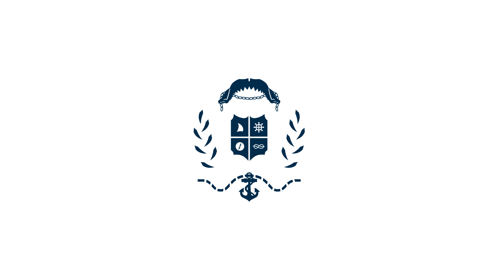
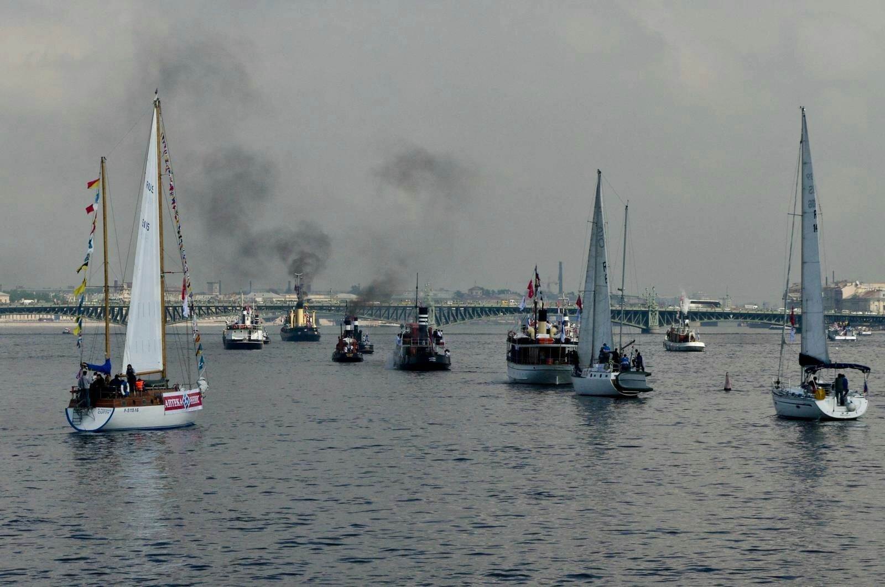
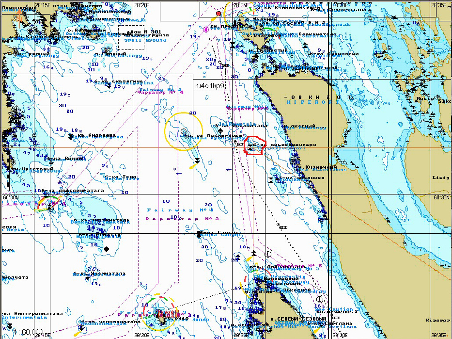

Полезные статьи
-

-
 Случай №1. Яхта Урал. Опасная якорная стоянка
Случай №1. Яхта Урал. Опасная якорная стоянка1998 г. яхта «Урал» класса Л-6 Центрального яхт-клуба Санкт-Петербурга шла в Стокгольм.
Наши происшествия -
Случай №2. Яхта Катти. Погнутый баллер
Петербургские яхтсмены знают, что подход к каждому форту Кронштадта индивидуален. Знали они и подход к форту №4.
Наши происшествия -
Случай №3. Яхта Катти. Дюкер
Руководствуясь многолетним опытом навигаций в этой акватории, судоводители сошли с фарватера.
Наши происшествия -
 Случай №4. Яхта Катти. Неудачный выход с форта Милютин
Случай №4. Яхта Катти. Неудачный выход с форта МилютинУдержаться на остром створе было непросто. Покидая форт, всегда немного нервничали и не зря.
Наши происшествия -
 Случай №5. Яхта Катти. Авария стоячего такелажа
Случай №5. Яхта Катти. Авария стоячего такелажаА вот если отдались сразу все четыре основные ванты грот-мачты на кече – что делать?
Наши происшествия -

-

Случай № 7. Яхта Катти. Банка ПохъякивенкариЕсли вокруг 20-ти метровые глубины и есть баночка с трехметровой глубиной, лучше ее обойти. Почему?
Наши происшествия -
Предисловие к разделу "Столкновения судов" Столкновения судов
-
 Гибель яхты «Бещады» Столкновения судов
Гибель яхты «Бещады» Столкновения судов